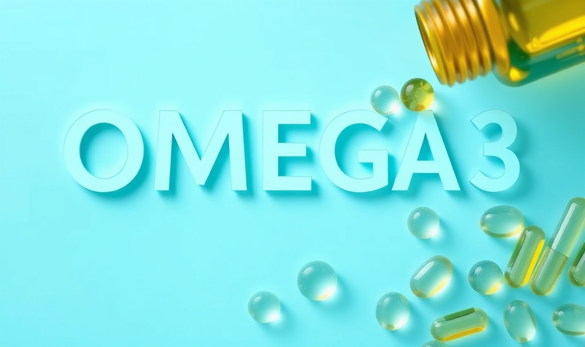

For months, my eyes were itchy. Gritty. Burning. Worse at screens, worse in air conditioning, worse in the evening. I assumed it was allergies. I tried drops. I told myself it was just part of getting older.
I was already taking fish oil. I'd been taking it for years. I thought I had that box ticked.
What I didn't know — and what took me a genuinely embarrassing amount of research to figure out — is that most fish oil supplements on the market are rancid before you even open the bottle. And rancid fish oil doesn't just fail to work. It may actually make things worse.
When I switched to a properly formulated, third-party tested, triglyceride-form omega-3, my eyes improved within about four weeks. Not dramatically. But noticeably. I stopped reaching for the drops every afternoon. The grittiness eased. And I felt faintly furious — because I'd been "taking my omega-3" for years and getting essentially nothing from it.
This is the article I wish I'd had before wasting that time.
The Benefits Are Real — and More Specific Than You'd Think
The evidence for omega-3s during perimenopause is genuinely strong. EPA and DHA (the two active fatty acids in fish oil) do meaningful things in the body that are directly relevant to what women in their 40s and 50s are navigating. But the benefits aren't vague "wellness." They're specific.
Dry and itchy eyes. Yes, I'm starting here, because it's the one nobody expects and the one I notice most personally. EPA and DHA are incorporated directly into the meibomian glands — the oil-producing glands along your eyelid that form the lipid layer of your tear film. When omega-3 intake is poor or poorly absorbed, this layer thins and you get evaporative dry eye: gritty, scratchy, burning eyes that are worse at screens and in air conditioning. A 2013 randomised trial in Cornea found omega-3 supplementation significantly improved dry eye symptoms and tear film stability. This is one of the fastest benefits women notice — often within four to six weeks of switching to a quality product.
Brain health and the fog that nobody warned you about. DHA makes up around 20% of the brain's fatty acid content and is particularly concentrated in the prefrontal cortex — the part responsible for memory, focus, and decision-making. As oestrogen declines and your brain's energy metabolism shifts, maintaining adequate DHA matters more, not less. A 2025 narrative review in Women's Health (Minihane et al.) examined omega-3s specifically in the context of the menopausal transition. It found compelling evidence that adequate EPA and DHA intake supports brain function during this period — particularly for mood, anxiety, and cognitive fog. Notably, the researchers identified perimenopause as the most responsive window for intervention — and one that no clinical trial has yet specifically targeted.
Mood and anxiety. This one has the clearest clinical evidence. EPA specifically — at doses around 1–2g per day — has a meaningful, documented benefit for depressive symptoms, independent of antidepressant use. A 2022 Cochrane systematic review confirmed this. The mechanism makes sense: EPA modulates the inflammatory cytokines that interfere with serotonin and dopamine signalling. Low omega-3 status and mood disruption go hand in hand in perimenopause — and this is one of the most under-discussed connections in women's health.
Cardiovascular protection. Oestrogen protects the cardiovascular system in ways that start to matter less as it declines. Omega-3s help fill part of that gap. The VITAL trial (NEJM, 2019, 25,000+ participants) found a 28% reduction in heart attack risk in people with low dietary fish intake who supplemented with omega-3. For women who don't regularly eat oily fish, this is one of the most important numbers in this article.
Joints, skin, and inflammation. EPA and DHA reduce pro-inflammatory prostaglandins — the molecules behind joint aching and skin inflammation. Many women notice their skin getting drier as oestrogen declines; omega-3 supports the skin's lipid barrier from the inside out.
What about hot flashes? I want to be honest here, because I've seen too many supplement brands overstate this. The evidence for omega-3 reducing hot flash frequency is weak. A 2023 systematic review found no substantial benefit, and a large randomised controlled trial — 1.8g of omega-3 daily for 12 weeks — found no significant improvement in vasomotor symptom frequency compared to placebo. There's a small signal for night sweats, but it's not robust. The brain, mood, heart, and eye benefits are where the evidence is solid.
Why Your Fish Oil Probably Isn't Working
Here's the thing I didn't know when I was faithfully swallowing my supermarket fish oil every morning.
Most of it is rancid.
Fish oil oxidises. When it does, it doesn't just stop working — research suggests rancid omega-3 may actively contribute to inflammation rather than reducing it. And a staggering proportion of what's on the market is oxidised.
A 2015 study in Scientific Reports tested 171 fish oil supplements available in New Zealand and found over 80% exceeded recommended oxidation thresholds. A 2023 multi-year analysis of 72 omega-3 supplements found that 68% of flavoured products exceeded the TOTOX upper limit set by the Global Organization for EPA and DHA. Even more concerning: added flavouring masks rancidity. The products that taste the best are often the most compromised. The lemon or orange flavour isn't freshness — it's camouflage.
This is an industry-wide problem. Similar findings have been replicated in Norwegian, US, South African, and Chinese markets. It just doesn't get talked about, because it's commercially inconvenient for everyone selling fish oil.
The crude but useful home test: cut open one of your capsules. Fresh, quality fish oil should smell neutral or faintly of lemon. A distinctly fishy or "off" smell is oxidation. If your capsules smell unpleasant, they're almost certainly rancid.
I did this test on the bottle I'd been taking for two years. I'll leave you to imagine the result.
The Form Problem: Why Your Dose Number Is Probably Misleading You
Even if your fish oil isn't oxidised, there's a second issue most women don't know about: the form it's in.
Most concentrated fish oil capsules are formulated as ethyl esters (EE) — a processed form that's cheap to manufacture. Research by Dyerberg et al. found that triglyceride (TG) form omega-3 absorbs approximately 70% more effectively than EE form in humans. Multiple studies have confirmed this difference is meaningful at the tissue level.
What this means practically: you could be taking a high-dose EE supplement and absorbing a fraction of what the label claims. A lower-dose TG product could be delivering significantly more EPA and DHA to your tissues. The headline number on the front of the bottle means very little without knowing the form.
Look for "re-esterified triglycerides," "natural triglyceride form," or "rTG" on the label. If the label doesn't specify — and most cheaper products don't — it's almost certainly ethyl ester.
The VITAL trial (Manson et al., NEJM 2019) — one of the largest randomised controlled trials of omega-3 supplementation, following over 25,000 participants — found significant cardiovascular benefits, including a 28% reduction in heart attack risk in people who don't regularly eat fish. For perimenopausal women, whose cardiovascular risk rises as oestrogen declines, this is directly relevant.
On mood: a 2022 Cochrane systematic review found that EPA specifically — not DHA — shows meaningful benefit for depressive symptoms. For mood support, look for EPA-dominant formulas (higher EPA than DHA). For general cardiovascular and anti-inflammatory support, a balanced ratio is fine.
On dosing: most research showing benefit uses 1,000–2,000mg of combined EPA+DHA daily. Check the EPA+DHA content on your label — not the total fish oil dose, which is a larger number and largely meaningless.
References: VITAL Trial (Manson et al., NEJM 2019); Minihane et al., Women's Health (2025); Cochrane Review EPA (2022); Dyerberg et al. on TG vs EE bioavailability; Hilbert et al. (2015) Scientific Reports.
What to Actually Look For
After going down a research rabbit hole on this (occupational hazard), these are the criteria that matter:
The brands I personally researched and trust — based on independent testing records, not marketing — are Sports Research, Nordic Naturals, Carlson Labs, and Wiley's Finest. All are available through iHerb and ship to NZ at substantially lower cost than local retail. They are not equivalent to supermarket fish oil — the quality difference is documented and meaningful.
One good fish oil capsule beats four cheap oxidised ones. Every time.
— Sarah, VelaOra
The Bottom Line
I spent years thinking I was covered. I wasn't. And I suspect a lot of women reading this are in the same position.
The science on omega-3s during perimenopause is solid — for eyes, mood, brain health, cardiovascular protection, and inflammation. But that science was done on properly absorbed, non-oxidised omega-3 at therapeutic doses. It wasn't done on whatever's in most of the bottles at the chemist.
The gap between what omega-3 can do and what your average fish oil capsule actually delivers is enormous. It's just invisible to most consumers, because no one has a commercial interest in telling you.
Check your bottle. Open a capsule. Look at the form. Find the EPA+DHA number. See if they publish oxidation data.
You might be surprised.
VelaOra uses affiliate links. If you purchase through these links, VelaOra earns a small commission at no extra cost to you. Affiliate income supports the research and writing that makes this platform possible. Sarah only recommends products she has researched and believes are genuinely worth buying.
More like this, every week.
Science-backed articles for NZ and Australian women navigating the seasons nobody prepares you for.
Join VelaOra Free →Live healthy. Love lots. Be your best you. 🌿 — Sarah xx